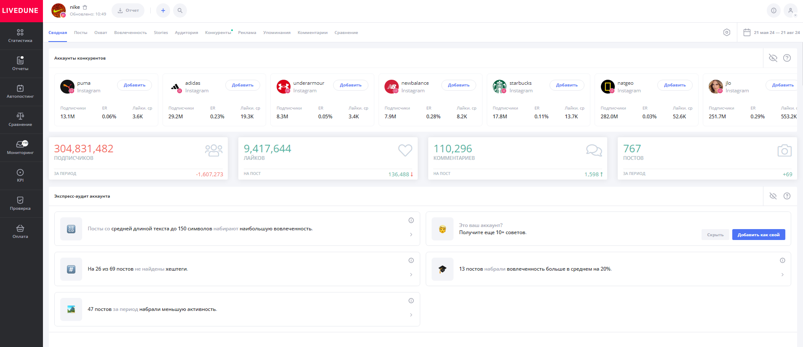
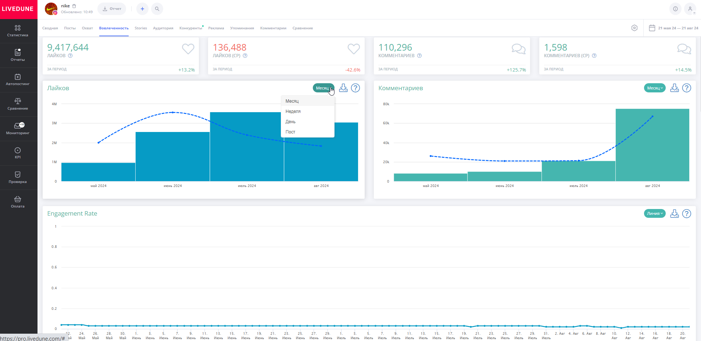
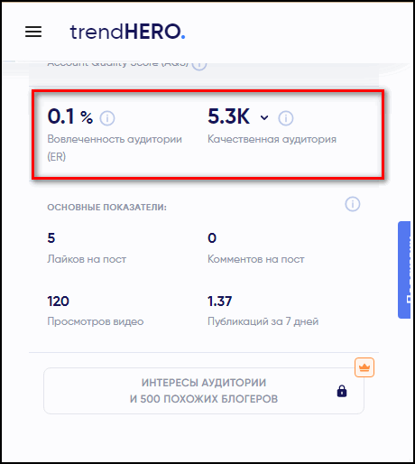

Что такое ER и вовлеченность в Инстаграме: как рассчитать

Чтобы понять, что такое ER в Инстаграме* нужно подключить статистику и разобраться с термином «Вовлеченность». Этот показатель необходим, если нужно определить ошибки в продвижении, спланировать дальнейший контент-план.
Расшифровка ER для Инстаграма*
Термин ER (Engagement Rate) или вовлеченность в контент означает средний коэффициент взаимодействия публики с материалами, размещенными в публикациях или Сторис. Расчет необходим владельцам крупных блогов, обладателям собственных интернет-магазинов или брендов.
Его можно вычислить самостоятельно, опираясь на статистику, или воспользоваться дополнительными сервисами. Для чего нужен коэффициент вовлеченности:
- определить ранее допущенные проблемы при продвижении;
- выделить темы, на которые нужно сделать упор;
- определить часы и дни для размещения материалов.
Говоря проще, этот показатель поднимает количество действий на каждой публикации. Если владелец страницы не отслеживает статистику и опирается только на комментарии/лайки – это значит, что в продвижении допущены ошибки. Постоянное наблюдение за анализом профиля и отдельных постов, вычисление ER, необходимо для подбора контента в дальнейшем, а также влияет на возможность сотрудничества с рекламодателями и продажи в сети.
Формулы для самостоятельного расчета
Самостоятельно рассчитать ER в Инстаграме* возможно с помощью стандартных формул. Владельцу блога нужно собрать данные на последних публикациях, оценить количество подписчиков. Есть две формулы, которыми пользуются блогеры: с охватом на одну публикацию или определить сразу на весь профиль.
Первая: без охвата ER = (Like+комментарии)/подписчиков*100%
Если рассчитывать для целого профиля, нужно брать последние три публикации: суммировать лайки и комментарии, разделить на количество. Далее, полученные цифры использовать в формуле. В крупных блогах берут 10-20 последних постов и учитывают собранную информацию.
Вторая формула: ER = (Like+комментарии)/ охват * 100%.
За «охват» можно взять среднестатистическое значение. Например, на публикациях обычно до 3000 посетителей. Именно это значение можно использовать для расчета данных по аккаунту.
InstaHero: простая аналитика профиля
Владелец профиля может посмотреть индекс вовлеченности в Инстаграме*, воспользовавшись сервисом InstaHero. В отличие от предыдущего, можно настроить постоянный мониторинг и получать данные по странице на электронную почту. Как посмотреть уровень качества профиля:
- Подключить свою учетную запись – подождать, пока закончится первая проверка.

- Перейти к «Анализ» - Средняя вовлеченность.
Там же, можно посмотреть данные о доступности аудитории, активности и подлинности. Например, если в подписчиках много коммерческих страниц, то они считаются недоступными. С таких страниц редко оформляют заказы или проявляют активность под публикациями. Сервис высчитывает, какое количество страниц у подписчиков открыты, сколько бизнес-профилей. Если аккаунт закрыт, то его также оценивают как недоступный. Это значит, что владелец блога не сможет настроить массовую передачу сообщений.
LiveDune: все метрики по своим и чужим аккаунтам
Сервис LiveDune работает через официальный API и не запрашивает паролей от ваших аккаунтов в соцсетях. Анализируйте свои и конкурентные страницы. После регистрации добавьте свой аккаунт на Дашборд, сервис автоматически подберет и предложит отслеживать аккаунты конкурентов. Все основные метрики будут доступны сразу.

Помимо основных данных, в сервисе доступна детальная аналитика постов, охвата, вовлеченности и сравнение аккаунтов по заданным параметрам. На вкладке вовлеченность, следить за изменением ER можно в динамике, а также выгружать как отдельные графики, так и отчет по аккаунту целиком.
Сервис предоставляет бесплатный пробный период, попробовать все функции и оценить полезность можно за неделю.TrendHero: смотрим ER
В сервисе TrendHero не нужно вводить формулы, чтобы посчитать ER в Инстаграме*. Владельцу страницы достаточно зайти, подключить свою учетную запись и подождать, когда пройдет первая проверка. Как работать с TrendHero:
- Зайти в сервис – зарегистрировать страницу.
- Подключить свой профиль из Инстаграма* – перейти в раздел «Аналитика».

- Посмотреть, какой ER показал TrendHero.
Помимо коэффициента вовлеченности, пользователю будет показана активность подписчиков, какой прирост и сколько удалилось, качество аудитории. Последний пункт значит, что определенное число последователей обладают количеством подписок в менее 1000 человек. То есть, владельцы таких страниц не являются ботами, не занимаются массфолловингом.
Как поднять ER в Инстаграме*
Повысить вовлеченность в Инстаграме* можно любыми способами, которые связаны с продвижением. Начиная о типичных кликбейтных заголовков и заканчивая на платной рекламе от Facebook*. Как бесплатно увеличить коэффициент вовлеченности:
- постоянно размещать публикации и делиться Историями;
- добавлять комментарии под постами конкурентов, искать дружественные страницы;
- использовать хештеги, геометки;
- выделить три темы и использовать их для продвижения.
Платная реклама – это официальный инструмент, который поддерживается администрацией. Владелец блога выбирает публикацию, которую хочет продвигать, указывает целевую аудиторию. На основе этого, получает новых подписчиков, активность под постами.
При бесплатном продвижении нужно ежедневно делиться интересными постами или выделить график, но добавлять только интересную информацию. Если количество подписчиков не увеличивается – вероятно, проблема в неправильно подобранной теме или хештегах.
Показатели ER в профиле
В зависимости от объема аудитории, размер норма ER в Инстаграме* вычисляется по-разному.
| 5-10К подписчиков | От 1,6 до 12% |
| 20-100К подписчиков | От 2% до 6% |
| 100-500К | До 3% |
Если у пользователя показатели ниже, чем указано в таблице – это повод обратить внимание на разные способы продвижения. Если выше – нужно постараться сохранить эти значения и повышать уровень взаимодействий в дальнейшем.
На что влияет вовлеченность в аккаунте Инстаграма*
Вовлеченность в аккаунте Инстаграма* или ER – это необходимая метрика. Без нее, определить эффективность запущенных промоакций, рекламных коллабораций не получится. Показатели вовлеченности в Инстаграме* нужно рассчитывать в таких случаях:
- рекламное сотрудничество. Рекламодатель должен знать, какие статистические данные у выбранного блогера;
- запуск курса, промоакции, вебинары;
- запуск личной продукции. Например, создание коллекции одежды, бренд.
Рассчитать ER практически невозможно на закрытых блогах. Несмотря на то, что за основу берут комментарии и лайки, в таких профилях нет естественного продвижения постов с помощью «Рекомендаций». Это значит, что страница не появится в ТОПе и рассматривать качество контента возможно лишь через основные действия подписчиков: запрос в друзья, ответы, лайки и просмотры.
Подключение статистики облегчает работу с техническими параметрами и позволит проводить полноценные аудиты. Если ER в профиле упал, то автору стоит обратить внимание на оформление страницы, контент, а также заранее удалить ботов и фейков.